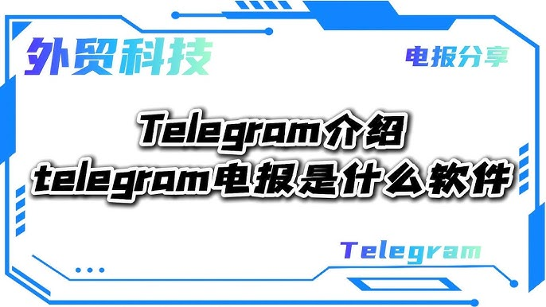

电报是什么软件？
电报（Telegram）是一款跨平台的即时通讯软件，提供文本、语音、视频消息和文件分享等功能。它以高速、安全和隐私为特点，支持端到端加密，保护用户通信隐私。电报还提供群组、频道和机器人功能，支持多人同时聊天。该软件可以在手机、电脑和Web端使用，广泛应用于个人和团队沟通。

电报的功能介绍
电报支持的消息类型
-
文本消息：电报允许用户发送文本消息，支持多种语言，并提供表情符号、GIF、贴纸等多种形式的表达方式。无论是日常聊天还是工作沟通，用户都能通过文本轻松传递信息。
-
语音和视频消息：除了文字消息，电报还支持语音和视频消息，用户可以直接录制并发送语音或视频，增强了消息的情感表达和互动性，适合快速传递想法或即时反馈。
-
多媒体消息：电报不仅支持发送图片、音频和视频文件，还允许发送文档文件，满足了用户在多种场景下的分享需求。传输的文件大小可达2GB，便于传送高质量的内容，如高清图片或长视频。
如何使用电报进行文件分享
-
选择文件进行分享：在电报的聊天界面中，用户可以点击附件图标，选择文件选项后，浏览设备中的文件。用户可以选择不同格式的文件，如文档、图片、音频或视频等，进行快速分享，方便多种场景使用。
-
上传大文件：电报允许用户上传和分享最大2GB的文件，极大满足了传输大文件的需求。无论是高清视频、软件安装包，还是大型工作文件，电报都可以高效地进行分享，且没有任何限制。
-
多平台同步分享：电报支持在不同平台间的文件同步，文件一旦上传到电报云端，用户可以在手机、平板和电脑端进行访问和下载，确保文件随时随地都能快速访问，实现高效的跨设备共享。
电报的安全性与隐私保护
电报的端到端加密
-
默认加密保护：电报为用户的私人聊天提供端到端加密，确保只有发送者和接收者能够读取消息内容。加密过程在设备端进行，即使电报的服务器也无法解密消息内容，从而保障了聊天的绝对隐私。
-
加密聊天的优势：端到端加密意味着即使黑客获取了通讯数据，也无法破解其中的信息。这种加密技术大大增强了电报在保护用户隐私方面的优势，尤其是在处理敏感信息时更具安全性。
-
加密群组聊天：电报的端到端加密不仅适用于私聊，群组聊天也同样使用加密保护，确保在群聊中的消息不会被未授权的第三方访问，大大提升了群组沟通的安全性。
如何在电报中保护个人隐私
-
启用两步验证：为了进一步保护账户安全，电报提供了两步验证功能。用户可以在账户设置中启用该功能，除了密码外，还需要输入从手机或电子邮件收到的一次性验证码，增加了账户的安全性，防止未经授权的访问。
-
管理隐私设置：电报允许用户详细管理自己的隐私设置。在“隐私与安全”菜单中，用户可以控制谁能查看自己的个人信息，如电话号码、最后在线时间、资料照片等。此外，用户还可以选择谁能够向自己发送消息，增加隐私保护。
-
自毁消息功能：电报提供了自毁消息功能，用户可以设置消息在一定时间后自动删除。这对于保护敏感信息尤其重要，确保即使设备被访问，信息也能在设定时间内消失，减少隐私泄露的风险。

电报与其他通讯软件对比
电报与微信的主要区别
-
隐私保护：电报注重用户的隐私保护，提供端到端加密，并且遵循无日志政策，保证用户的聊天记录不会被存储或泄露。而微信的数据存储则由腾讯掌控，用户的聊天内容和数据可能被用于广告或其他商业目的。
-
功能多样性：电报提供群组、频道、机器人等多种功能，适合多种用途，特别是针对团队协作和大规模信息传播。而微信更侧重于个人社交功能，虽然支持群聊和朋友圈，但功能相对简单，不如电报灵活。
-
文件分享：电报支持最大2GB的文件分享，用户可以发送大文件、高清图片和视频等，而微信的文件传输限制较小，单个文件的大小限制为100MB，且不支持发送较大的多媒体文件。
电报与WhatsApp的对比
-
加密方式：电报提供端到端加密，且支持在云端保存消息，这意味着用户可以随时访问历史消息。WhatsApp也使用端到端加密，但消息会被加密存储在服务器上，除非设置“消失消息”，否则无法在多个设备上同步查看历史消息。
-
群组和频道功能：电报支持创建无限成员的群组，并提供频道功能，适合大规模的公众传播。而WhatsApp的群组成员数有限，最多支持256人，并没有像电报那样的频道功能，主要适合小范围社交和团队沟通。
-
跨平台使用：电报支持手机、桌面和Web端的同步，且支持多个设备同时登录一个账号，保证信息同步。WhatsApp的桌面版本需要手机保持在线才能使用，限制了多设备的灵活性。

如何安装电报
在手机上安装电报
-
Android设备安装：首先，打开Google Play商店，在搜索栏中输入“Telegram”。找到由Telegram Messenger LLP发布的应用，点击“安装”按钮。下载完成后，点击“打开”即可开始使用电报。
-
iOS设备安装：打开Apple App Store，在搜索框中输入“Telegram”，找到并点击“获取”按钮进行下载。如果需要，输入Apple ID密码或使用Face ID进行身份验证。下载完成后，点击“打开”即可开始使用。
-
注册和登录：安装完成后，打开电报应用，输入手机号码进行注册或登录。你将收到验证码，输入后即可开始使用电报的所有功能。
在电脑上安装电报的步骤
-
Windows系统安装：访问电报的官方网站，点击“Get Telegram for Windows”按钮下载.exe安装包。下载完成后，双击安装包并按照提示完成安装。安装后，桌面上会出现电报的快捷图标，点击即可启动电报。
-
macOS系统安装：在电报官网上，点击“Get Telegram for macOS”下载.dmg文件。下载完成后，双击.dmg文件，将电报图标拖动到“应用程序”文件夹中，安装完成后即可从“应用程序”中启动电报。
-
Linux系统安装：对于Linux用户，电报官网提供.deb和.rpm格式的安装包。根据Linux发行版的不同，选择合适的安装包下载。下载完成后，通过命令行工具安装，Debian/Ubuntu系统可以使用
sudo dpkg -i telegram-desktop*.deb进行安装，安装后即可启动电报。

电报的跨平台支持
电报在不同平台的兼容性
-
手机平台：电报支持Android和iOS平台，用户可以在Google Play商店或Apple App Store免费下载并安装应用。无论是安卓设备还是苹果手机，电报都提供流畅的使用体验，确保用户可以轻松发送消息、图片、视频等。
-
桌面平台：电报支持Windows、macOS和Linux平台，用户可以访问电报官网下载适用于各操作系统的桌面版。无论是PC还是Mac用户，都可以在不同设备上享受与移动端一致的功能和界面。
-
Web端兼容：除了手机和桌面版，电报还支持Web端使用。用户可以通过浏览器直接访问Telegram网页版，在不安装任何应用的情况下使用电报进行消息发送和接收，方便快速登录。
如何在多个设备上使用电报
-
多设备同步：电报支持多设备同步，用户可以在手机、平板、电脑之间无缝切换。电报的云端存储允许用户在不同设备上查看和发送消息，确保消息在所有设备间同步更新。
-
同时登录多个设备：用户可以在多个设备上登录同一个电报账户，无需担心消息同步问题。无论在手机上查看消息，还是在桌面版上回复，所有的对话内容都能实时同步更新，保持一致性。
-
跨平台使用体验：电报提供一致的跨平台体验，用户在不同设备上操作时，不会丢失任何信息。无论是在手机上发起的聊天，还是在桌面端查看的消息，所有操作都保持同步，确保便捷和高效。
电报有哪些主要功能？
电报与其他通讯软件有何不同？
如何在手机上使用电报？
Telegram中文 其他新闻
国内手机号注册电报安全吗？
使用国内手机号注册电报（Telegram）从隐私保护角度来看存在一定的风险。电报虽然提供端到端加密，但手机号可 […]
telegram大陆手机收不到短信
在中国大陆，由于网络审查和服务限制，Telegram短信验证码可能无法成功发送到手机。使用国际SIM卡或者借助 […]
如何下载电报？
要下载Telegram，可以访问你的智能手机的应用商店（如Google Play商店或Apple App St […]
Telegram下载的文件在哪？
Telegram下载的文件默认保存在你的设备上的Telegram文件夹中。在Android设备上，通常位于内部 […]